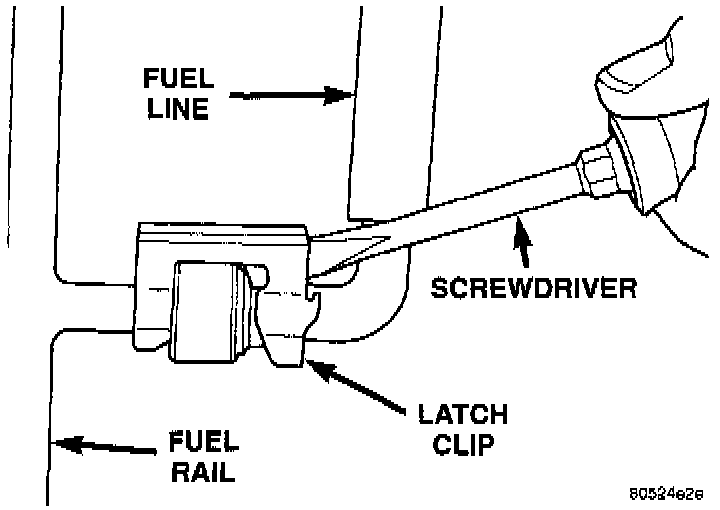
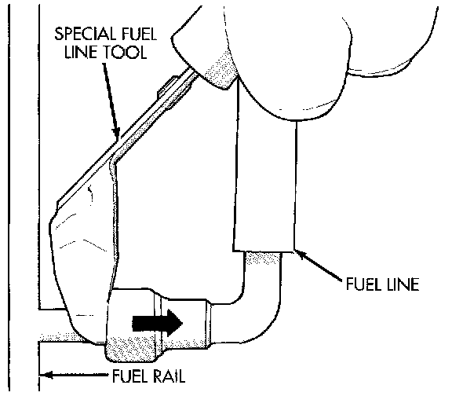

Fuel Supply Line: Service and Repair
FUEL LINE AT FUEL RAILUse the following procedure if the fuel rail is equipped with a fuel pressure test port.
A latch clip is used to secure the fuel line to the fuel rail on certain engines. A special tool will be necessary to separate the fuel line from the fuel rail after the latch clip is removed.
DISCONNECT/CONNECT AT FUEL RAIL
1. Disconnect the negative battery cable from battery.
2. Perform the fuel pressure release procedure.
3. Clean the fitting of any foreign material before disassembly.
Fig. 19 Latch Clip Removal-Typical:

4. Pry up on the latch clip with a screwdriver (Fig. 19).
5. Slide the latch clip toward the fuel rail while lifting with the screwdriver.
Fig. 20 Fuel Line Removal - Typical:

6. Insert special fuel line removal tool into the fuel line (Fig. 20). Use this tool to release the locking fingers in the end of the line.
7. With the special tool still inserted, pull the fuel line from the fuel rail.
8. After disconnection, the locking fingers will remain within the quick-connect fitting at the end of the fuel line.
9. Inspect fuel line fitting, locking fingers and fuel rail fitting for damage. Replace as necessary.
10. Prior to connecting the fuel line to the fuel rail, check condition of both fittings. Clean the parts with a lint-free cloth. Lubricate them with clean engine oil.
11. Insert the fuel line onto the fuel rail until a click is felt.
12. Verify a locked condition by firmly pulling on fuel line and fitting (15-30 lbs.).
13. Install latch clip (snaps into position). If the latch clip will not fit, this indicates the fuel line is not properly installed to the fuel rail. Recheck the fuel line connection.
14. Connect negative battery cable to battery
15. Start engine and check for leaks.